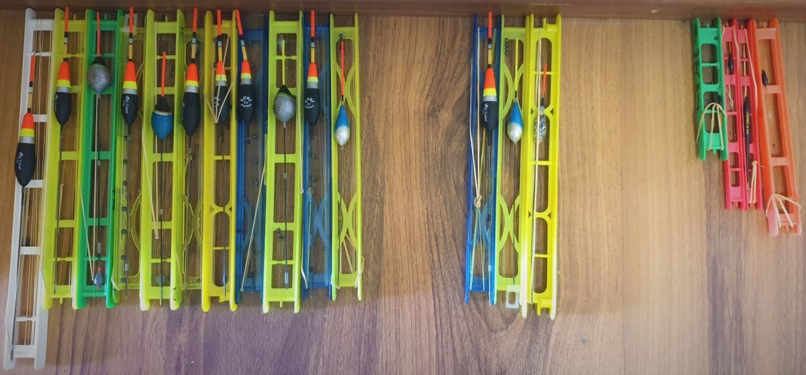
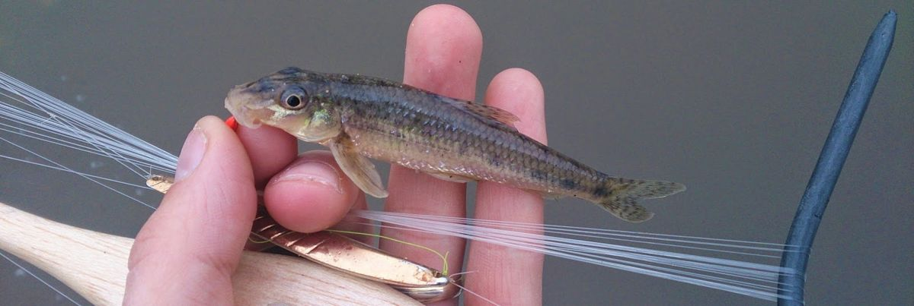
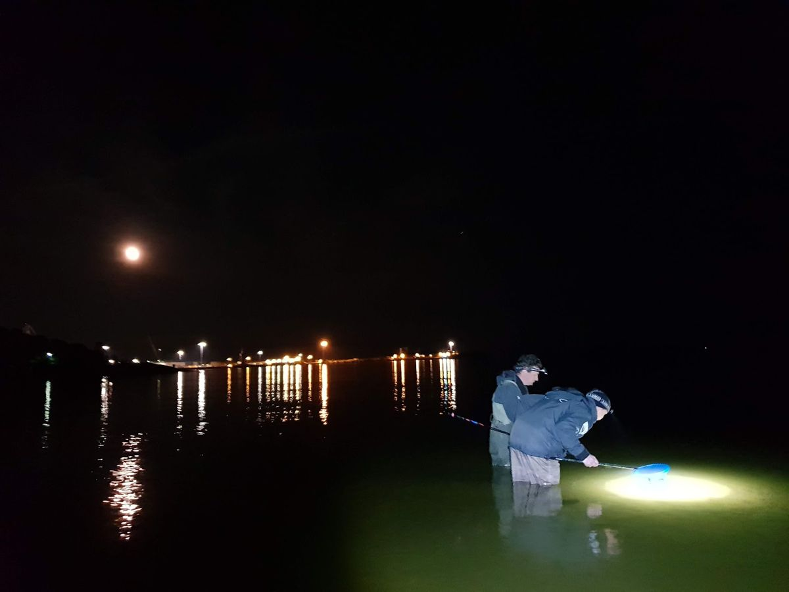
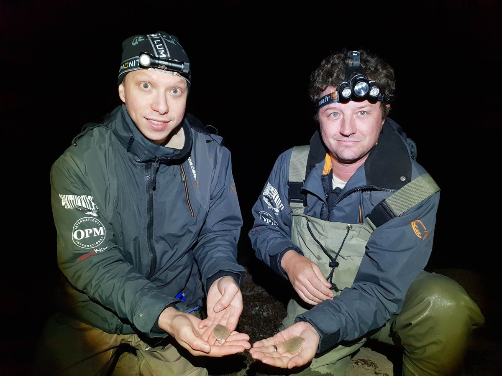

Välineet ja tekniikat
Pyyntitavat
Näillä välineillä pystyy kalastamaan lajeja läpi vuoden. Jokaisen pyyntitavan alla ovat lajit, joille se sopii.
Lajeja pyyntitavoittain
Sama laji voi olla usean pyyntitavan alla.
Onki
Helpoin tapa aloittaaLajikalastajan tärkeimpiä välineitä on kunnon onki. Onginta on myös helpoin tapa aloittaa fongaukseen tutustuminen. Ensimmäiseksi ongeksi ei kannata hankkia perinteistä ”huoltamo-onkea”, joka on varustettu suurella punavalkoisella koholla ja isolla koukulla. Sillä pääsee kyllä alkuun, mutta pienempien kalalajien pyytäminen on haastavaa.
Suosittelen, että hankit ”tikkukohon” ja onkilaitteen, jonka koukku on kokoluokkaa 12–16. Kyseisellä koukkukoolla pärjää Suomessa esiintyvien peruskalalajien kanssa. Onkilaitteita kannattaa hankkia valmiiksi ja ottaa myös kohoja, joissa on paikka valotikun kiinnittämiseen.


17 lajia, joita pyydetään tällä tavalla
Lirkki
Pienten kalojen pyyntiinYksi tärkeimmistä fongarin työvälineistä on lirkkionki. Lirkillä pyydetään pääasiassa pieniä rantakaloja matalasta vedestä, kuten mutua, kivisimppua, kivennuoliaista, piikkikaloja ja tokkoja. Lirkkiminen antoi vuonna 2020 omalle lajilistalle huimat 18 eri kalalajia ja oli näin ennätysprojektin tehokkain pyyntimuoto.
Lirkki on yksinkertaisuudessaan lyhyt vapa, johon on siiman päähän viritetty paino ja koukku. Parhaan lirkkiongen saa tehtyä noin metrin mittaisesta virvelin kärkiosasta – myös vanhat vavankärjet, pilkkivavat ja onkivavat käyvät. Kaupasta hyvä vaihtoehto on venepilkkisetti. Vapaan viritetään vavan mittainen ohut siima (n. 0,10 mm), jonka päähän paino ja kalalajille sopivan kokoinen koukku.
Koukkuja on helppo vaihtaa, kun sitoo koukkuun pienen siimanpätkän, jonka päähän solmii lenkin. Pääsiimaan tehdään myös lenkkisolmu, jolloin valmis tapsi on helppo pujottaa ja irrottaa. Kahlatessa syvemmällä kannattaa pitää mukana muutamaa eri koukkukoolla varustettua lirkkiä.
Yöllinen valokeilassa tapahtuva lirkintä on fongausta parhaimmillaan. Lirkkipaikkana toimii mikä tahansa ranta, kun valoteho yltää pohjaan asti. Päivällä voi lirkkiä havaittuja kaloja tai ”dippailla” pohjan piilopaikkoja systemaattisesti läpi.
Syötiksi helpoin on kastemato, josta napsaistaan koukulle ja kalalle sopivan kokoinen palanen. Kalastusliikkeistä saa kärpäsentoukkia ja muita eläviä syöttejä läpi vuoden. Ota mukaan myös haavi – liian moni tärkeä lajipiste on tippunut koukusta, koska haavia ei ole ollut mukana.

29 lajia, joita pyydetään tällä tavalla
Pilkki
Toimii läpi vuodenPilkit toimivat talvikalastuksen lisäksi myös hyvin kesällä esimerkiksi laiturilta tai veneestä pilkittäessä. Pilkkivavoista hyödyllisin on haarukkavapa, koska sillä on kätevä keriä kala ylös syvemmästäkin vedestä sotkematta siimaa. Sopiva siiman paksuus on 0,16 mm tai ohuempi.
Toimiva yhdistelmä syvemmissä vesissä on tapsipilkki eli pystypilkin ja mormuskan yhdistelmä. Rannalta kalastettaessa myös pelkkä pieni mormuska toimii lirkin korvikkeena etsittäessä lajeja kivien koloista.


9 lajia, joita pyydetään tällä tavalla
Pohjaonki
Virvelillä isompien lajien peräänPohjaonginnan eri tekniikoilla ja syöteillä lajimäärää saa kasvatettua huomattavasti. Myös kelaonginta on suositeltavaa, jolloin kalastettava alue rannalla laajenee huomattavasti. Ankeriastakin voi tavoitella talvella pohjaongella.

14 lajia, joita pyydetään tällä tavalla
Virveli
Heittokalastus vieheilläLajimäärällisesti virvelillä kalastaen eri muodoin voit saada kalalajeista niitä suurimpia. Perinteisiä virvelillä pyydettäviä lajeja ovat ahven, hauki, kuha ja jalokalamme. Särkikaloista erityisesti toutain, turpa ja säyne ovat hanakoita nappaamaan vieheeseen.
6 lajia, joita pyydetään tällä tavalla
Jigi
Pohjan läheltä syvemmästäJigillä pyydetään pohjan tuntumassa eläviä lajeja, esimerkiksi simppuja ja turskaa syvemmästä vedestä.
3 lajia, joita pyydetään tällä tavalla
Litka
Monikoukkuinen parvikalojen pyyntiinLitkalla eli monikoukkuisella perukkeella pyydetään parvissa liikkuvia lajeja, kuten silakkaa ja kilohailia. Silakalle suurempi koukku on parempi: siitä on helpompi irrottaa saalis, ja pienemmät koukut eivät välttämättä tartu.
6 lajia, joita pyydetään tällä tavalla
Perho
Virtavesien lohikaloillePerholla pyydetään erityisesti virtavesien lohikaloja, kuten harjusta, kirjolohta ja taimenta. Huomioi aina kalastuspaikan säännöt, esimerkiksi virtavesissä.
7 lajia, joita pyydetään tällä tavalla
Uistelu
Veneestä vetäenUistelemalla eli venettä soutaen tai ajaen viehettä perässä vetäen pyydetään esimerkiksi lohta, haukea ja rautua.
2 lajia, joita pyydetään tällä tavalla
Muut tarvittavat varusteet

Otsa- tai taskulamppu
Lamppua tarvitset yöllä tapahtuvaan kalastamiseen. Pieniä rantavesissä eläviä lajeja, mm. tokkoja ja simppuja, on pimeän aikaan huomattavasti helpompi pyytää. Simput, kivinilkat ja kivennuoliaiset tulevat piiloistaan saalistamaan, ja valokeilassa tokkojen varjot helpottavat kalojen havaitsemista.

Kahluuvälineet tai saappaat
Suurimman osan kalalajeista voi tavoittaa rantamatalasta, jolloin kumisaappaat riittävät mainiosti. Osa lajeista elelee syvemmällä, ja tätä varten kahluuhousut ovat parempi vaihtoehto.

Vesi-ikkunalautta
Kelluva laatikko, jossa on läpinäkyvä pohja. Lautta poistaa veden pintaheijastuksen vesikiikarin tavoin ja mahdollistaa kalojen etsimisen myös päivänvalossa. Yöllä valon lisäämällä ikkunaan voi valaista laajan alueen.
Haavi
Pitkävartinen lirkki ja haavi mahdollistavat myös arempien kalojen lirkkimisen valokeilan reunan himmeämmältä alueelta – eikä lajipiste tipu koukusta.